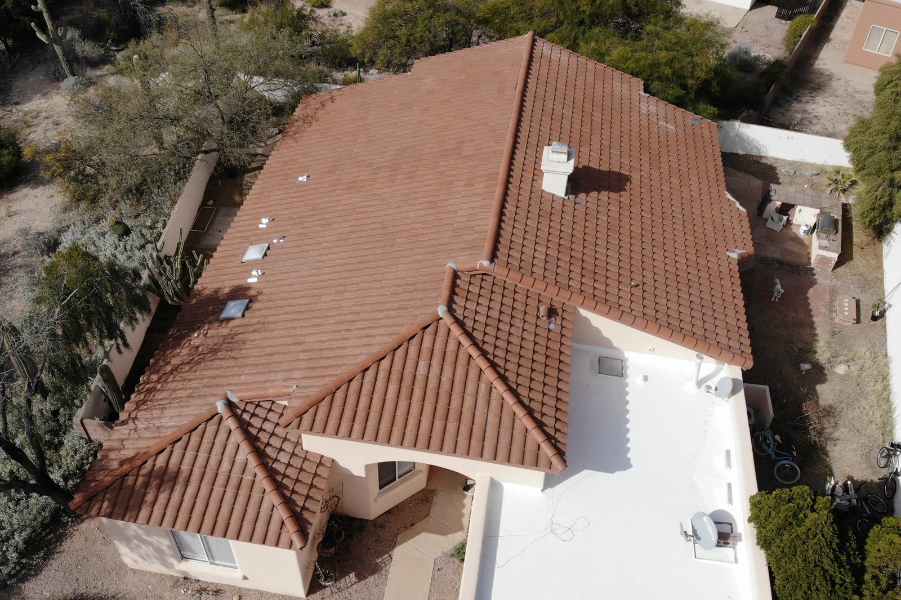

Roof Replacement · Tucson, AZ
Roof Replacement in Tucson, Built for the Arizona Desert
When patching it up stops making sense, a new roof buys you decades of not thinking about it. We handle the whole thing, tear-off to the last nail swept out of the driveway, with materials picked for the heat and sun out here.
- Tile, shingle & metal
- Financing available
- Manufacturer warranties
- Free replacement estimate
Re-Roof Specialists
A new roof you can quit thinking about
The sun out here is hard on a roof. Even a good one wears out eventually. The underlayment dries up, shingles lose their grit, and a tile roof gets to where there are just too many bad spots to keep chasing one at a time.
A full replacement basically resets the clock with newer, heat-rated material and an install that's done to code and done clean. We'll lay out every option and what each one costs and let you make the call.
- Complete tear-off & disposal
- New underlayment & flashing
- Shingle, tile & metal systems
- Workmanship + manufacturer warranties
Done Properly
Full tear-off, fresh underlayment and correct flashing — not a layer over old problems.
Desert-Rated Materials
Reflective, heat-tolerant systems that hold up to relentless Tucson UV.
Warranty-Backed
Workmanship warranties plus manufacturer coverage on qualifying systems.
Is It Time?
Signs you need a new roof
Not sure if you need a whole new roof or just a repair? Here's what usually tells us a roof's about done in this climate.
Your Options
Shingle, tile or metal — we install them all
Different houses need different roofs. Shingle's the cheapest and goes on the fastest. Tile lasts forever and has that classic Southwest look. Metal and coatings each have their place depending on the roof's shape and what you want out of your power bill.
We'll look at your slope, how the roof's built, and what you want to spend, then tell you what actually fits. We're not going to push you into something fancier than you need.
- Architectural asphalt shingles
- Concrete & clay tile
- Standing-seam metal
- Reflective coatings for flat sections
Shingle roof replacement in Tucson Tile roof repair, underlayment & replacement Metal roofing in Tucson
By Roof Type
What replacing each kind of roof involves
A roof replacement isn't one job, it's four different ones depending on what's up there now and what's wrong with it. Here's what each one looks like on a Tucson house, so you know what you're being quoted.
Cost
What roof replacement costs in Tucson
Three things set the price of a Tucson roof replacement: the size and pitch of the roof, the material you pick, and what we find when the old roof comes off. Shingle is the easiest on the wallet, tile and metal cost more up front and last far longer. Tear-off, disposal, new underlayment, flashing and the final cleanup are all part of our number, so the quote you get is the quote you pay.
We've written up the planning ranges we see around town so you can budget before we come out. The exact figure comes with a free, itemized estimate and financing if you want to spread it out. And if you're building new rather than replacing, that's a different job with its own page.
How much does a roof replacement cost? The Tucson guide What a Tucson roof replacement looks like, step by step New construction roofing, if you're building rather than replacing
Tucson Specifics
Replacing a roof in Tucson: heat, monsoon and HOA rules
A roof replacement here is a different job than one back east. The underlayment does more of the work because the sun cooks everything above it, so we use high-temp underlayment made for the roof and attic temperatures we actually see. The flashing has to be tight against monsoon rain that comes in sideways and finds any lap that was run the wrong way. And the schedule has to respect the weather: in July and August we tear off only what we can dry in that same day, so your house never sits open overnight.
The neighborhood matters too. Up in the Catalina Foothills, Oro Valley and most of the newer HOA communities, tile is the norm and the HOA usually has a say in profile and color, so we get you the product specs and samples the submittal asks for before anything is ordered. In central Tucson, midtown and the east side you see a lot more shingle and flat roofs on older homes, where the decking and attic ventilation often need attention once the old roof comes off.
If a storm pushed you into replacing, we document the damage before tear-off and give you the photos and a detailed written scope your insurance company will ask for. We work alongside your adjuster, and we won't promise what the policy will pay.
- High-temp underlayment under every system
- Flashing detailed for wind-driven rain
- Same-day dry-in during monsoon season
- Specs and samples for HOA submittals
- Decking and ventilation checked on older homes
- Insurance documentation when a storm is the cause
Related Guides
More reading before you replace
Still deciding whether it's time? These guides cover the warning signs, how long each roof type really lasts out here, and when to schedule the work.
Signs you need a new roof How long asphalt, tile and metal roofs really last The best time of year to replace a roof in Tucson Your guide to getting a new roof in Tucson
Where We Work
Roof replacement across Tucson and Pima County
We replace roofs all over the Tucson metro, from central Tucson and the Foothills to Oro Valley, Marana, Sahuarita, Green Valley and Vail. The housing stock changes as you go: mid-century ranch homes with flat and shingle roofs in the center of town, tile HOA subdivisions from the 80s on across the north and northwest side, and newer builds out in Vail and Sahuarita. Each area page covers what we see on the roofs there.
Roofing in Tucson Roofing in Oro Valley Roofing in Marana Roofing in Sahuarita and Green Valley Roofing in Vail
See Our Work
See roofs we've replaced around Tucson
A new roof is a big check to write, so look at the work first. We post photos from our jobs as they happen, and while your roof is in progress you get the same thing: a daily update with photos so you can see the tear-off, the decking, the underlayment and the finished roof without climbing a ladder. Our customers rate us 5.0 on Google across 55 reviews.
How It Works
Our Roofing Process
On-Site Assessment
We evaluate the roof, structure and your goals, then present clear system options.
Written Proposal
Transparent pricing by material, with financing options if you want them.
Tear-Off & Prep
Old roofing removed, decking inspected, new underlayment and flashing installed.
Installation
Your chosen system installed to code by our own crews — never day-labor subs.
Cleanup & Warranty
Magnetic nail sweep, full cleanup, final walkthrough and warranty paperwork.
FAQ
Roofing Questions, Answered
Still wondering about something? Call us at 520-753-1758 — straight answers, no pressure.
Ask Us DirectlyHow often does a roof need to be replaced in Arizona?
Depends what it's made of. Shingle roofs around here usually go 15 to 25 years. Tile can last 50-plus, but the underlayment under the tile typically needs doing around the 20 to 25 year mark. We'll get up there and tell you right where yours sits.
How much is a new roof in Tucson, AZ?
Comes down to size, how steep it is, and the material. Shingle's the easiest on the wallet; tile and metal cost more but they last a lot longer. The estimate's free and itemized, and we do financing if you'd rather spread it out.
How long does it take to replace a roof?
Most houses take somewhere between 2 and 5 days depending on size, material and the weather. We'll give you a real timeline before we ever start.
Do you replace just the tile underlayment?
Yep, and a lot of the time that's all it needs. On plenty of tile roofs the tile's still fine and it's the underlayment that's shot. We pull the tile, lay down new underlayment, and stack the same tile back on. Way cheaper than buying all new tile.
Will you help with financing?
We do. You can get the roof on now and pay it off over time.
Can you replace a roof during monsoon season in Tucson?
We do it all summer. We watch the forecast, tear off only what we can dry in the same day, and keep tarps on the truck. If a storm's rolling in that afternoon, we hold off on opening up more roof. It's slower some weeks, but your house never sits open overnight.
Will a new roof lower my cooling bills?
It can help. Lighter colors, reflective shingles or coatings, and fixing the attic ventilation while the roof is open all cut down on the heat getting into the house. We won't put a dollar figure on it because every house is different, but we'll tell you which options make the biggest difference for yours.
Do I need to be home during the roof replacement?
No, and most people aren't. We send you photos and an update every day so you know exactly where the job stands, and we do a final walkthrough with you when it's finished.
Can you put new shingles over the old ones?
We don't. We tear off to the deck every time. A second layer hides soft decking and bad flashing, traps heat against the new shingles in a climate that already cooks them, and can void the manufacturer's warranty. It's cheaper on day one and more expensive every year after.
What happens if you find rotten decking?
We replace it. Soft or rotted decking usually shows up around old leaks, skylights and valleys, and nobody can see it until the roof is off. We photograph it, show you, and tell you the cost before we keep going, so nothing lands on the bill as a surprise.
Ready for a roof that lasts?
We'll come look it over, give you honest advice on materials, and leave you a written price with financing on the table.
Let's Talk
Let's Take a Look at Your Roof
Tell me what's going on up there — a leak, storm damage, an old roof that's seen better days, or a full replacement — and we'll get you on the books for a free inspection.